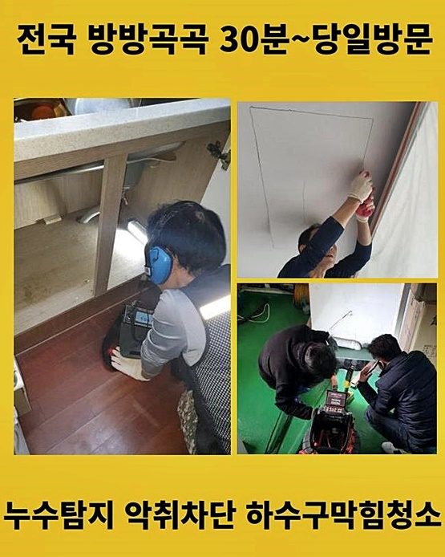
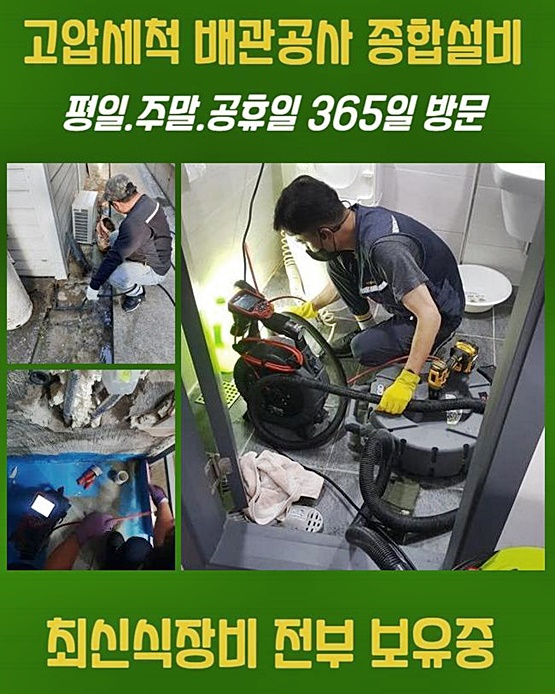
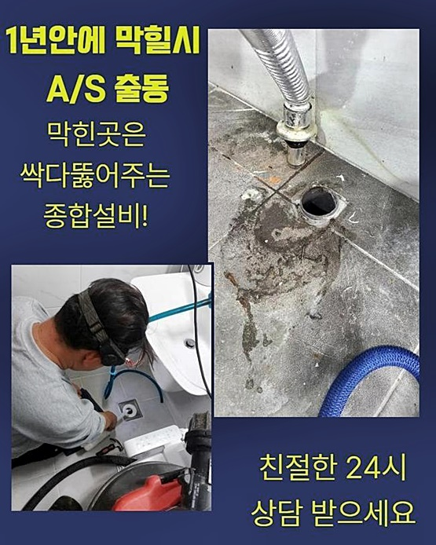
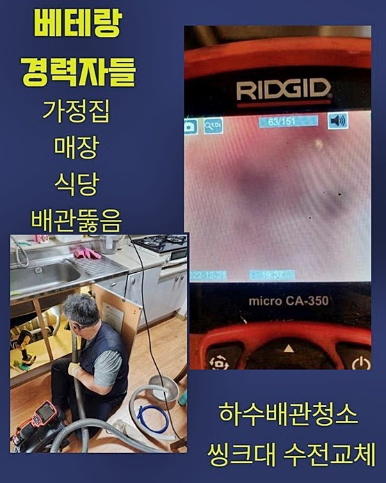
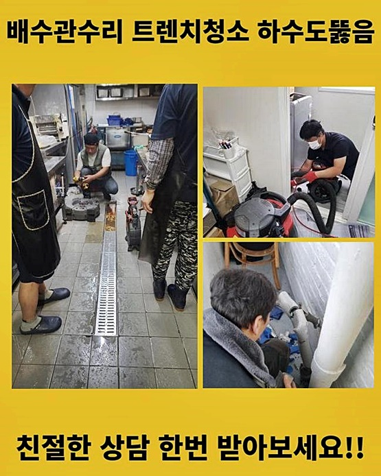
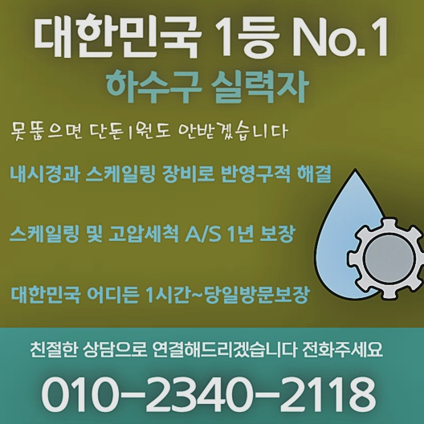

🏠 송파구 풍납동씽크대막힘 잠실3동 하수구뚫는곳 부속수리
용인 싱크대막힘 전문 시공 후기

📋 작업 개요
- 위치: 용인
- 서비스 유형: 싱크대막힘, 하수구막힘, 배관막힘, 뚫는업체, 배관청소, 고압세척, 악취차단
- 작업 일시: 2024. 7. 24. 9:14
- 업체명: 하수구수사대 (010-5615-2118)
🔍 문제 상황
송파구 풍납동씽크대막힘 잠실3동 하수구뚫는곳 부속수리
별일없는 일상적인 상황에서 갑자기 배수관이 작동하지 않으면 곤혹스러워집니다
이번에는 배수관로에 이상이 생긴다면 도전해볼 해결책들을 설명드리니 기억해두시면 도움이 되실겁니다
음식재료를 관리하는 식당 업무에 문제가 발생하면 그 순간부터 끼니조차도 정해진 시간에 먹는게 어려워지니 굶게됩니다
그리고 불결한 하수가 되돌아오며 고약한 냄새까지 새어나와 불편하게 한다면 조금이라도 빨리 막힘현상을 해소하고자 조치를 취합니다
취지는 좋다고 생각되지만 우리 전문팀은 일반인에 관점에서 배수구세척작업을 철저히 완료하는게 간단한 것은 아니라고 말할수 있습니다
가정의 오수가 넘쳐흐른 상황들에 다다랐다면 확실히 파이프 안쪽에 지방찌거기들과 여러종류의 퇴적성분들이 섞여있을테니 고성능의 기기 이용이 필요한 상황들이 자주 발생합니다
배수구막힘을 해결했던 곳도 유사한 패턴을 나타냈습니다
지면에 가득히 오수들이 솟구치고 있었고 불쾌한냄새도 대단히 많이 올라오고 있다고 했습니다
조금의 물빠짐을 만들기 위해 철사와 막대기를 이용하여 스스로 시도를 해봤지만 손상된 하수도가 반대로 올라오면서 바닥 하부로 물기가 흡수된 상황이라 상당히 심각하다고 하셨습니다
신속하게 출동하여 문제 구역을 관찰하니 뒤죽박죽 어지러운 상태로 파악되었고 탁한 물에다가 찌꺼기까지 무더기로 흘러넘쳐 배수관 냄새또한 대단했습니다

🔎 원인 분석
💡 전문가 진단: 정밀 진단 장비를 사용하여 슬러지의 고착 여부를 판명하고 타격/세척 작업을 실시했습니다.
사방을 확인해보며 주변상태를 확인해보니 다행스럽게 개수대 하부에 연결되어 있는 자바라호스에는 고장이 생기진 않은 것으로 보였습니다
혼자 뚫기를 시도하다가 배수관이 손상되는 일이 종종 일어납니다
외부상황의 검사를 마쳤으니 가구 밑부분의 배수관로에 흡입기를 집어넣어 주요 과업인 문제 해결책의 초기 단계를 시행하였습니다
적용한 도구는 건식 형태가 아니고 남아있는 물도 없애주는 성능이 포함되어 관속을 습기없이 조성한 후 청소작업을 진행합니다
빈곳 없이 배관을 채운 하수들을 처리하는 순서에서 이물질도 같이 배출이 되는 경우들이 존재합니다
강력한 석션기기로 수분을 제거했지만 물받이 통에 커다란 오염입자로 의심되는 물질이 확인되지 않았어요
착수와 동시에 불순물이 섞인 물은 제거했으니 다음 절차로 배수파이프 안에 특화된 카메라장비를 넣어서 내부 문제 검사를 실행하였습니다
길고 얇은 노즐 끝머리에 카메라 렌즈가 설치되어 어두컴컴하고 비좁은 배관 시스템이라도 매끄럽게 어디든지 점검할 수 있습니다
내시경도구를 통해 보여지는 붉은톤의 성분들이 오일들이 형성된것인데 이같은 기름뭉치인 슬러지들이 달려있는 지저분한 상황이 확인되었어요
더 안쪽으로 밀어 넣으니 크기가 매우 커진 기름 덩어리가 관찰되었어요
배수파이프의 통로만 비좁아진게 아니라 속을 꽉 막은 오염원이 보였어요
막힘현상을 일으킨 주요한 요인들을 발견했으므로 파악한 내용과 클리닝작업 전략을 보고하고 작업활동을 실행합니다

🔧 작업 과정
호스를 잡고서 내시경장비를 회수했더니 점성을 보이는 기름찌꺼기들이 장치 외부에 달라붙어 역겨운 냄새가 퍼지고 있었어요
더러움의 수준이 심각했다는 의미이니 추정해보면 평소 곰팡이균들이 계속하여 생긴다거나 계속되는 악취로 인한 고민도 있었을거라 예상했습니다
배관 내부를 깨끗하게 처치를 하면 이같은 고충까지도 없앨수 있습니다
끈끈하게 뭉쳐진 오물들을 걸레로 닦아내고 재차 배수관속에 넣어서 목표를 정하였습니다
음식잔여물이나 물티슈같은 고체가 남아있다면 고리를 이용하는 스타일로 처리했겠지만 오일뭉텅이가 막힘의 이유이니 회전할 수 있는 샤프트장치의 도움을 받아야 하는 상태였어요
플렉스샤프트기구는 파이프에 뭉쳐진 오일찌꺼기나 오염원을 잘게 부수어 하수관밖으로 배출하는데 서포트하는 기기입니다
끝머리에 헤드쪽이 체인처럼 강력하기에 찐득거리는 지방을 파쇄하는 기능도 완벽하게 수행합니다
가정내의 하수관 막힘의 원인이 잔존 오일이라면 언제나 운용하는 도구중 한가지입니다
배관속을 동영상으로 촬영하고 차단이 생긴 지점을 선명하게 관찰하면서 차례대로 정리작업을 진행했습니다
잔여물을 섬세하게 나누어 분쇄해주는 절차가 끝나면 흡입기기를 이용해 빨아들이며 위로 빼내면서 깔끔한 하수관으로 바뀌는 모습이었습니다
나뉘고 분해된 잔여물들을 힘을 주어 아래로 보내면 하단에 쌓여서 처리하기 어려운 조건까지 초래할지 모르니 작업의 자취는 흡입장비로 번거롭더라도 흡입하는 작업을 각 장소에서 진행합니다
여러가구가 함께 쓰고 있는 큰규모의 폐수 관리망에 이물질 때문에 생긴 막힘이 발생했다면 처리량이 막대하니 압력을 가하여 배출하는 방안을 활용합니다
빌라 내부 하수구 문제점이 출현한 상태라면 발견한 원인들을 해결하는데 주요 목표를 삼고 정비하고 있습니다
꽤 수고스럽더라도 위생적으로 배관 안쪽 여건을 개선해둔다면 동일한 사유로 시간들을 무의미하게 허비할 필요가 없죠
이왕에 작업을 제공하게 됐으니 확실하게 맡아서 근본원인과 함께 이후의 케어까지도 철저히 담당하는게 하수관 관리전문가의 책임이라고 여깁니다
싱크대 하수구 청소를 깔끔히 완료한 후 작업영역을 재차 살펴본결과 깨끗해 보이는 물이 흐르고 있다는 것을 확인했습니다
불그스름한 오염물질이 잔류하지 않고 모두 꺼내서 정리했으니 비슷한 막힘 문제가 다시 생길 위험이 극히 적다고 판단됩니다
시각적 데이터를 파악하고나면 실질적 향상을 확인하고자 물 흐름진단을 검사했어요
우리들이 간과했던 작동 불량이나 막힌 구역이 있을 수도 있기 때문에 물을 충분히 넣어 하수관 속으로 흘려넣었어요


✅ 작업 완료
다행스럽게도 매끄럽고 원활히 흐르기에 오늘의 수리작업이 원활하게 진행되었구나 하고 믿게 되었습니다
갖가지 생활용품들로 급하게 뚫어보다가는 배수관깨짐으로 크나큰 피해가 발생할 수 있으므로 배수관 수선 전문작업자를 탐색하고 문의하신 후 문제를 해소하시라고 권장하여드립니다
배관 막힘 문제는 발빠른 대처가 필수인데 전국적으로 어디서나 60분안에 방문드릴 수 있기에 걱정에 사로잡히지 않아도 됩니다
추가로 명백한 요금 계산으로 재정적 부담감 역시 능동적으로 줄여드리고 있으니 불필요한 염려는 덜고 맡겨주신다면 신속히 찾아뵙겠습니다
상세한 분석을 근간으로 결점없는 하수관 정비를 완료하여 만족시켜 드릴게요



⚠️ 주방 싱크대 배관 막힘 예방 수칙
- ✅ 기름기가 묻은 식기나 프라이팬은 설거지 전 키친타올로 반드시 기름때를 닦아내세요.
- ✅ 주기적으로 싱크대 개수대에 뜨거운 물을 가득 받아 한 번에 내려 배관 내부 기름을 씻어내세요.
- ✅ 배수구 거름망을 미세한 필터로 사용하시고 음식물 찌꺼기가 틈으로 새어 들지 않게 관리하세요.
- ✅ 베이킹소다와 식초를 뜨거운 물과 함께 일주일에 한 번씩 부어주면 배관 살균과 막힘 예방에 좋습니다.
💡 핵심 정리
- 확실한 장비 작업(내시경 점검 및 샤프트 스케일링)으로 원인을 뿌리 뽑습니다.
- 작업 후 1년 이내에 동일한 부위 재발 시 100% 무상 A/S 서비스를 보장합니다.
- 서울 · 경기 · 인천 전 지역에 24시간 언제든 긴급 출동할 수 있도록 항시 대기 중입니다.
❓ 자주 묻는 질문 (FAQ)
🚨 용인 싱크대막힘 문제로 고민이신가요?
정확한 원인 진단과 확실한 시공으로 재발 없는 해결을 약속드립니다.
24시간 긴급 출동 | 서울 · 경기 · 인천 전지역 | 1년 내 재발 시 무상 A/S